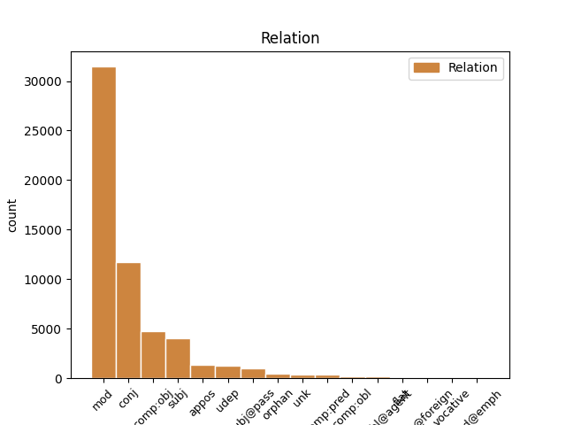
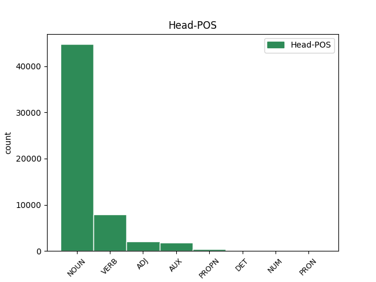
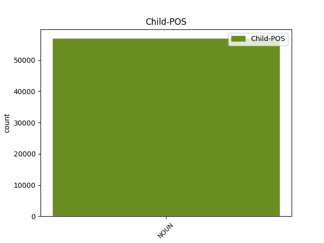

Distribution of features within this leaf



Agreement Rules sorted by frequency.
- When the dependent token is the modifer(mod) of the head token, and the dependent token is NOUN.
1 Jinak _ _ _ _ 0 _ _ _
2 řečeno _ _ _ _ 0 _ _ _
3 , _ _ _ _ 0 _ _ _
4 ion _ _ _ _ 0 _ _ _
5 vznikne _ _ _ _ 0 _ _ _
6 z _ _ _ _ 0 _ _ _
7 neutrálního _ _ _ _ 0 _ _ _
8 atomu _ _ _ _ 0 _ _ _
9 tím _ _ _ _ 0 _ _ _
10 , _ _ _ _ 0 _ _ _
11 že _ _ _ _ 0 _ _ _
12 se _ _ _ _ 0 _ _ _
13 změní _ _ _ _ 0 _ _ _
14 počet počet NOUN NNIS1-----A---- Animacy=Inan|Case=Nom|Gender=Masc|Number=Sing|Polarity=Pos 0 _ _ _
15 jeho _ _ _ _ 0 _ _ _
16 elektronů elektron NOUN NNIP2-----A---- Animacy=Inan|Case=Gen|Gender=Masc|Number=Plur|Polarity=Pos 14 mod _ _
17 tak _ _ _ _ 0 _ _ _
18 , _ _ _ _ 0 _ _ _
19 aby _ _ _ _ 0 _ _ _
20 by _ _ _ _ 0 _ _ _
21 elektronový _ _ _ _ 0 _ _ _
22 obal _ _ _ _ 0 _ _ _
23 dosáhl _ _ _ _ 0 _ _ _
24 nejbližší _ _ _ _ 0 _ _ _
25 stabilní _ _ _ _ 0 _ _ _
26 konfigurace _ _ _ _ 0 _ _ _
27 . _ _ _ _ 0 _ _ _
1 Elektronům _ _ _ _ 0 _ _ _
2 v _ _ _ _ 0 _ _ _
3 úplných _ _ _ _ 0 _ _ _
4 vnitřních _ _ _ _ 0 _ _ _
5 slupkách _ _ _ _ 0 _ _ _
6 říkáme _ _ _ _ 0 _ _ _
7 vnitřní _ _ _ _ 0 _ _ _
8 , _ _ _ _ 0 _ _ _
9 elektronům _ _ _ _ 0 _ _ _
10 v _ _ _ _ 0 _ _ _
11 krajní _ _ _ _ 0 _ _ _
12 slupce _ _ _ _ 0 _ _ _
13 obvodové _ _ _ _ 0 _ _ _
14 nebo _ _ _ _ 0 _ _ _
15 optické _ _ _ _ 0 _ _ _
16 či _ _ _ _ 0 _ _ _
17 valenční _ _ _ _ 0 _ _ _
18 , _ _ _ _ 0 _ _ _
19 protože _ _ _ _ 0 _ _ _
20 jejich _ _ _ _ 0 _ _ _
21 uspořádání _ _ _ _ 0 _ _ _
22 a _ _ _ _ 0 _ _ _
23 počet _ _ _ _ 0 _ _ _
24 určuje _ _ _ _ 0 _ _ _
25 optická _ _ _ _ 0 _ _ _
26 spektra spektrum NOUN NNNP4-----A---- Case=Acc|Gender=Neut|Number=Plur|Polarity=Pos 0 _ _ _
27 a _ _ _ _ 0 _ _ _
28 mocenství mocenství NOUN NNNS4-----A---- Case=Acc|Gender=Neut|Number=Sing|Polarity=Pos 26 conj _ _
29 prvků _ _ _ _ 0 _ _ _
30 . _ _ _ _ 0 _ _ _
1 V _ _ _ _ 0 _ _ _
2 # _ _ _ _ 0 _ _ _
3 sestavil sestavit VERB VpYS---XR-AA--- Aspect=Perf|Gender=Masc|Number=Sing|Polarity=Pos|Tense=Past|VerbForm=Part|Voice=Act 0 _ _ _
4 ruský _ _ _ _ 0 _ _ _
5 chemik chemik NOUN NNMS1-----A---- Animacy=Anim|Case=Nom|Gender=Masc|Number=Sing|Polarity=Pos 3 subj _ _
6 Mendělejev _ _ _ _ 0 _ _ _
7 prvky _ _ _ _ 0 _ _ _
8 do _ _ _ _ 0 _ _ _
9 periodické _ _ _ _ 0 _ _ _
10 soustavy _ _ _ _ 0 _ _ _
11 , _ _ _ _ 0 _ _ _
12 která _ _ _ _ 0 _ _ _
13 je _ _ _ _ 0 _ _ _
14 připojena _ _ _ _ 0 _ _ _
15 . _ _ _ _ 0 _ _ _
1 V _ _ _ _ 0 _ _ _
2 # _ _ _ _ 0 _ _ _
3 sestavil sestavit VERB VpYS---XR-AA--- Aspect=Perf|Gender=Masc|Number=Sing|Polarity=Pos|Tense=Past|VerbForm=Part|Voice=Act 0 _ _ _
4 ruský _ _ _ _ 0 _ _ _
5 chemik _ _ _ _ 0 _ _ _
6 Mendělejev _ _ _ _ 0 _ _ _
7 prvky prvek NOUN NNIP4-----A---- Animacy=Inan|Case=Acc|Gender=Masc|Number=Plur|Polarity=Pos 3 comp:obj _ _
8 do _ _ _ _ 0 _ _ _
9 periodické _ _ _ _ 0 _ _ _
10 soustavy _ _ _ _ 0 _ _ _
11 , _ _ _ _ 0 _ _ _
12 která _ _ _ _ 0 _ _ _
13 je _ _ _ _ 0 _ _ _
14 připojena _ _ _ _ 0 _ _ _
15 . _ _ _ _ 0 _ _ _
1 K _ _ _ _ 0 _ _ _
2 dalšímu _ _ _ _ 0 _ _ _
3 inertnímu _ _ _ _ 0 _ _ _
4 plynu plyn NOUN NNIS3-----A---- Animacy=Inan|Case=Dat|Gender=Masc|Number=Sing|Polarity=Pos 0 _ _ _
5 , _ _ _ _ 0 _ _ _
6 argonu argon NOUN NNIS3-----A---- Animacy=Inan|Case=Dat|Gender=Masc|Number=Sing|Polarity=Pos 4 appos _ SpaceAfter=No
7 , _ _ _ _ 0 _ _ _
8 dojdeme _ _ _ _ 0 _ _ _
9 však _ _ _ _ 0 _ _ _
10 připojením _ _ _ _ 0 _ _ _
11 pouhých _ _ _ _ 0 _ _ _
12 osmi _ _ _ _ 0 _ _ _
13 elektronů _ _ _ _ 0 _ _ _
14 . _ _ _ _ 0 _ _ _
1 Především _ _ _ _ 0 _ _ _
2 je _ _ _ _ 0 _ _ _
3 to _ _ _ _ 0 _ _ _
4 záření _ _ _ _ 0 _ _ _
5 nárazové _ _ _ _ 0 _ _ _
6 neboli _ _ _ _ 0 _ _ _
7 impulsové _ _ _ _ 0 _ _ _
8 , _ _ _ _ 0 _ _ _
9 vznikající vznikající ADJ AGNS1-----A---- Aspect=Imp|Case=Nom|Gender=Neut|Number=Sing|Polarity=Pos|Tense=Pres|VerbForm=Part|Voice=Act 0 _ _ _
10 brzděním brzdění NOUN NNNS7-----A---- Case=Ins|Gender=Neut|Number=Sing|Polarity=Pos 9 udep _ LDeriv=brzdit
11 elektronů _ _ _ _ 0 _ _ _
12 na _ _ _ _ 0 _ _ _
13 anodě _ _ _ _ 0 _ _ _
14 . _ _ _ _ 0 _ _ _
1 Zvláštní _ _ _ _ 0 _ _ _
2 zájem zájem NOUN NNIS1-----A---- Animacy=Inan|Case=Nom|Gender=Masc|Number=Sing|Polarity=Pos 3 subj@pass _ _
3 byl být AUX VpYS---XR-AA--- Gender=Masc|Number=Sing|Polarity=Pos|Tense=Past|VerbForm=Part|Voice=Act 0 _ _ _
4 věnován _ _ _ _ 0 _ _ _
5 otázkám _ _ _ _ 0 _ _ _
6 formování _ _ _ _ 0 _ _ _
7 spektrálních _ _ _ _ 0 _ _ _
8 čar _ _ _ _ 0 _ _ _
9 v _ _ _ _ 0 _ _ _
10 podmínkách _ _ _ _ 0 _ _ _
11 přítomnosti _ _ _ _ 0 _ _ _
12 magnetického _ _ _ _ 0 _ _ _
13 pole _ _ _ _ 0 _ _ _
14 . _ _ _ _ 0 _ _ _
1 Čtvrtá _ _ _ _ 0 _ _ _
2 a _ _ _ _ 0 _ _ _
3 pátá _ _ _ _ 0 _ _ _
4 vodorovná _ _ _ _ 0 _ _ _
5 řada _ _ _ _ 0 _ _ _
6 tvoří _ _ _ _ 0 _ _ _
7 první _ _ _ _ 0 _ _ _
8 dvojnásobnou _ _ _ _ 0 _ _ _
9 periodu _ _ _ _ 0 _ _ _
10 celkem _ _ _ _ 0 _ _ _
11 # _ _ _ _ 0 _ _ _
12 prvků _ _ _ _ 0 _ _ _
13 a _ _ _ _ 0 _ _ _
14 šestá _ _ _ _ 0 _ _ _
15 a _ _ _ _ 0 _ _ _
16 sedmá _ _ _ _ 0 _ _ _
17 řada řada NOUN NNFS1-----A---- Case=Nom|Gender=Fem|Number=Sing|Polarity=Pos 0 _ _ _
18 druhou _ _ _ _ 0 _ _ _
19 dvojnásobnou _ _ _ _ 0 _ _ _
20 periodu perioda NOUN NNFS4-----A---- Case=Acc|Gender=Fem|Number=Sing|Polarity=Pos 17 orphan _ _
21 rovněž _ _ _ _ 0 _ _ _
22 # _ _ _ _ 0 _ _ _
23 prvků _ _ _ _ 0 _ _ _
24 . _ _ _ _ 0 _ _ _
1 Nebylo být AUX VpNS---XR-NA--- Gender=Neut|Number=Sing|Polarity=Neg|Tense=Past|VerbForm=Part|Voice=Act 0 _ _ _
2 by _ _ _ _ 0 _ _ _
3 to _ _ _ _ 0 _ _ _
4 ale _ _ _ _ 0 _ _ _
5 první _ _ _ _ 0 _ _ _
6 ani _ _ _ _ 0 _ _ _
7 poslední _ _ _ _ 0 _ _ _
8 překvapení překvapení NOUN NNNS1-----A---- Case=Nom|Gender=Neut|Number=Sing|Polarity=Pos 1 comp:pred _ LDeriv=překvapit|SpaceAfter=No
9 . _ _ _ _ 0 _ _ _
1 Složka _ _ _ _ 0 _ _ _
2 magnetického _ _ _ _ 0 _ _ _
3 momentu _ _ _ _ 0 _ _ _
4 dráhy _ _ _ _ 0 _ _ _
5 elektronu _ _ _ _ 0 _ _ _
6 může _ _ _ _ 0 _ _ _
7 mít _ _ _ _ 0 _ _ _
8 jen _ _ _ _ 0 _ _ _
9 hodnoty _ _ _ _ 0 _ _ _
10 rovné _ _ _ _ 0 _ _ _
11 celému _ _ _ _ 0 _ _ _
12 násobku násobek NOUN NNIS3-----A---- Animacy=Inan|Case=Dat|Gender=Masc|Number=Sing|Polarity=Pos 0 _ _ _
13 určité _ _ _ _ 0 _ _ _
14 konstanty _ _ _ _ 0 _ _ _
15 , _ _ _ _ 0 _ _ _
16 Bohrův _ _ _ _ 0 _ _ _
17 magneton magneton NOUN NNIS1-----A---- Animacy=Inan|Case=Nom|Gender=Masc|Number=Sing|Polarity=Pos 12 unk _ SpaceAfter=No
18 . _ _ _ _ 0 _ _ _
1 Jokohama _ _ _ _ 0 _ _ _
2 a _ _ _ _ 0 _ _ _
3 kolektiv _ _ _ _ 0 _ _ _
4 nahradili nahradit VERB VpMP---XR-AA--- Animacy=Anim|Aspect=Perf|Gender=Masc|Number=Plur|Polarity=Pos|Tense=Past|VerbForm=Part|Voice=Act 0 _ _ _
5 mechanické _ _ _ _ 0 _ _ _
6 kontakty _ _ _ _ 0 _ _ _
7 na _ _ _ _ 0 _ _ _
8 Danjonově _ _ _ _ 0 _ _ _
9 astrolábu _ _ _ _ 0 _ _ _
10 magnetickými _ _ _ _ 0 _ _ _
11 spinači spínač NOUN NNIP7-----A---- Animacy=Inan|Case=Ins|Gender=Masc|Number=Plur|Polarity=Pos 4 comp:obl _ SpaceAfter=No
12 . _ _ _ _ 0 _ _ _
1 Tato _ _ _ _ 0 _ _ _
2 unikátní _ _ _ _ 0 _ _ _
3 zahrada _ _ _ _ 0 _ _ _
4 je _ _ _ _ 0 _ _ _
5 výborně _ _ _ _ 0 _ _ _
6 vedena _ _ _ _ 0 _ _ _
7 dnes _ _ _ _ 0 _ _ _
8 vynikajícím _ _ _ _ 0 _ _ _
9 zahradnickým _ _ _ _ 0 _ _ _
10 odborníkem odborník NOUN NNMS7-----A---- Animacy=Anim|Case=Ins|Gender=Masc|Number=Sing|Polarity=Pos 0 _ _ _
11 panem pan NOUN NNMS7-----A---- Animacy=Anim|Case=Ins|Gender=Masc|Number=Sing|Polarity=Pos 10 flat _ LGloss=(oslovení)|LId=pan-1
12 Hodačem _ _ _ _ 0 _ _ _
13 . _ _ _ _ 0 _ _ _
1 Tento _ _ _ _ 0 _ _ _
2 srpnový _ _ _ _ 0 _ _ _
3 vzrůst _ _ _ _ 0 _ _ _
4 sluneční _ _ _ _ 0 _ _ _
5 činnosti _ _ _ _ 0 _ _ _
6 byl _ _ _ _ 0 _ _ _
7 charakterizován charakterizovaný ADJ VsYS---XX-AP--- Gender=Masc|Number=Sing|Polarity=Pos|Variant=Short|VerbForm=Part|Voice=Pass 0 _ _ _
8 především _ _ _ _ 0 _ _ _
9 vznikem vznik NOUN NNIS7-----A---- Animacy=Inan|Case=Ins|Gender=Masc|Number=Sing|Polarity=Pos 7 comp:obl@agent _ _
10 mohutné _ _ _ _ 0 _ _ _
11 skupiny _ _ _ _ 0 _ _ _
12 slunečních _ _ _ _ 0 _ _ _
13 skvrn _ _ _ _ 0 _ _ _
14 , _ _ _ _ 0 _ _ _
15 která _ _ _ _ 0 _ _ _
16 se _ _ _ _ 0 _ _ _
17 objevila _ _ _ _ 0 _ _ _
18 v _ _ _ _ 0 _ _ _
19 posledních _ _ _ _ 0 _ _ _
20 červencových _ _ _ _ 0 _ _ _
21 dnech _ _ _ _ 0 _ _ _
22 a _ _ _ _ 0 _ _ _
23 která _ _ _ _ 0 _ _ _
24 potom _ _ _ _ 0 _ _ _
25 a _ _ _ _ 0 _ _ _
26 vyprodukovala _ _ _ _ 0 _ _ _
27 tři _ _ _ _ 0 _ _ _
28 mohutné _ _ _ _ 0 _ _ _
29 protonové _ _ _ _ 0 _ _ _
30 erupce _ _ _ _ 0 _ _ _
31 a _ _ _ _ 0 _ _ _
32 velké _ _ _ _ 0 _ _ _
33 množství _ _ _ _ 0 _ _ _
34 drobných _ _ _ _ 0 _ _ _
35 erupcí _ _ _ _ 0 _ _ _
36 . _ _ _ _ 0 _ _ _
1 Časový _ _ _ _ 0 _ _ _
2 průběh _ _ _ _ 0 _ _ _
3 pelichání _ _ _ _ 0 _ _ _
4 je _ _ _ _ 0 _ _ _
5 závislý _ _ _ _ 0 _ _ _
6 na _ _ _ _ 0 _ _ _
7 mnoha _ _ _ _ 0 _ _ _
8 podrobnostech _ _ _ _ 0 _ _ _
9 způsobu _ _ _ _ 0 _ _ _
10 života _ _ _ _ 0 _ _ _
11 , _ _ _ _ 0 _ _ _
12 nemusí _ _ _ _ 0 _ _ _
13 být _ _ _ _ 0 _ _ _
14 shodný _ _ _ _ 0 _ _ _
15 ani _ _ _ _ 0 _ _ _
16 u _ _ _ _ 0 _ _ _
17 druhů _ _ _ _ 0 _ _ _
18 téhož _ _ _ _ 0 _ _ _
19 rodu _ _ _ _ 0 _ _ _
20 , _ _ _ _ 0 _ _ _
21 u _ _ _ _ 0 _ _ _
22 ťuhýků _ _ _ _ 0 _ _ _
23 , _ _ _ _ 0 _ _ _
24 lanius lanius NOUN NNMS1-----A---- Animacy=Anim|Case=Nom|Foreign=Yes|Gender=Masc|Number=Sing|Polarity=Pos 0 _ _ _
25 - _ _ _ _ 0 _ _ _
26 heinroth heinroth NOUN NNMS1-----A---- Animacy=Anim|Case=Nom|Foreign=Yes|Gender=Masc|Number=Sing|Polarity=Pos 24 flat@foreign _ SpaceAfter=No
27 , _ _ _ _ 0 _ _ _
28 ba _ _ _ _ 0 _ _ _
29 ani _ _ _ _ 0 _ _ _
30 u _ _ _ _ 0 _ _ _
31 obou _ _ _ _ 0 _ _ _
32 pohlaví _ _ _ _ 0 _ _ _
33 stejného _ _ _ _ 0 _ _ _
34 druhu _ _ _ _ 0 _ _ _
35 , _ _ _ _ 0 _ _ _
36 u _ _ _ _ 0 _ _ _
37 kachen _ _ _ _ 0 _ _ _
38 , _ _ _ _ 0 _ _ _
39 kde _ _ _ _ 0 _ _ _
40 je _ _ _ _ 0 _ _ _
41 u _ _ _ _ 0 _ _ _
42 samic _ _ _ _ 0 _ _ _
43 ovlivněn _ _ _ _ 0 _ _ _
44 hnízděním _ _ _ _ 0 _ _ _
45 . _ _ _ _ 0 _ _ _
1 Dobrý _ _ _ _ 0 _ _ _
2 den den NOUN NNIS4-----A---- Animacy=Inan|Case=Acc|Gender=Masc|Number=Sing|Polarity=Pos 0 _ _ _
3 , _ _ _ _ 0 _ _ _
4 pánové pán NOUN NNMP5-----A---- Animacy=Anim|Case=Voc|Gender=Masc|Number=Plur|Polarity=Pos 2 vocative _ SpaceAfter=No
5 . _ _ _ _ 0 _ _ _
Disagree Examples:
1 Politický _ _ _ _ 0 _ _ _
2 , _ _ _ _ 0 _ _ _
3 hospodářský _ _ _ _ 0 _ _ _
4 a _ _ _ _ 0 _ _ _
5 kulturní _ _ _ _ 0 _ _ _
6 vývoj _ _ _ _ 0 _ _ _
7 , _ _ _ _ 0 _ _ _
8 jakož _ _ _ _ 0 _ _ _
9 i _ _ _ _ 0 _ _ _
10 rychlý _ _ _ _ 0 _ _ _
11 rozvoj _ _ _ _ 0 _ _ _
12 motorismu _ _ _ _ 0 _ _ _
13 a _ _ _ _ 0 _ _ _
14 cestovního _ _ _ _ 0 _ _ _
15 ruchu _ _ _ _ 0 _ _ _
16 v _ _ _ _ 0 _ _ _
17 naší _ _ _ _ 0 _ _ _
18 socialistické _ _ _ _ 0 _ _ _
19 společnosti _ _ _ _ 0 _ _ _
20 nezbytně _ _ _ _ 0 _ _ _
21 vyžadují _ _ _ _ 0 _ _ _
22 zajištění zajištění NOUN NNNS4-----A---- Case=Acc|Gender=Neut|Number=Sing|Polarity=Pos 0 _ _ _
23 bezpečné _ _ _ _ 0 _ _ _
24 , _ _ _ _ 0 _ _ _
25 rychlé _ _ _ _ 0 _ _ _
26 a _ _ _ _ 0 _ _ _
27 spolehlivé _ _ _ _ 0 _ _ _
28 přepravy přeprava NOUN NNFS2-----A---- Case=Gen|Gender=Fem|Number=Sing|Polarity=Pos 22 mod _ SpaceAfter=No
29 . _ _ _ _ 0 _ _ _
1 Splnění splnění NOUN NNNS4-----A---- Case=Acc|Gender=Neut|Number=Sing|Polarity=Pos 0 _ _ _
2 tohoto _ _ _ _ 0 _ _ _
3 požadavku požadavek NOUN NNIS2-----A---- Animacy=Inan|Case=Gen|Gender=Masc|Number=Sing|Polarity=Pos 1 mod _ _
4 umožňuje _ _ _ _ 0 _ _ _
5 vedle _ _ _ _ 0 _ _ _
6 jiných _ _ _ _ 0 _ _ _
7 činitelů _ _ _ _ 0 _ _ _
8 účelná _ _ _ _ 0 _ _ _
9 úprava _ _ _ _ 0 _ _ _
10 Pravidel _ _ _ _ 0 _ _ _
11 provozu _ _ _ _ 0 _ _ _
12 na _ _ _ _ 0 _ _ _
13 silnicích _ _ _ _ 0 _ _ _
14 , _ _ _ _ 0 _ _ _
15 která _ _ _ _ 0 _ _ _
16 přispívá _ _ _ _ 0 _ _ _
17 k _ _ _ _ 0 _ _ _
18 plnění _ _ _ _ 0 _ _ _
19 všech _ _ _ _ 0 _ _ _
20 náročných _ _ _ _ 0 _ _ _
21 úkolů _ _ _ _ 0 _ _ _
22 i _ _ _ _ 0 _ _ _
23 k _ _ _ _ 0 _ _ _
24 zabezpečení _ _ _ _ 0 _ _ _
25 ochrany _ _ _ _ 0 _ _ _
26 života _ _ _ _ 0 _ _ _
27 a _ _ _ _ 0 _ _ _
28 zdraví _ _ _ _ 0 _ _ _
29 osob _ _ _ _ 0 _ _ _
30 a _ _ _ _ 0 _ _ _
31 majetku _ _ _ _ 0 _ _ _
32 . _ _ _ _ 0 _ _ _
1 Splnění _ _ _ _ 0 _ _ _
2 tohoto _ _ _ _ 0 _ _ _
3 požadavku _ _ _ _ 0 _ _ _
4 umožňuje _ _ _ _ 0 _ _ _
5 vedle _ _ _ _ 0 _ _ _
6 jiných _ _ _ _ 0 _ _ _
7 činitelů _ _ _ _ 0 _ _ _
8 účelná _ _ _ _ 0 _ _ _
9 úprava úprava NOUN NNFS1-----A---- Case=Nom|Gender=Fem|Number=Sing|Polarity=Pos 0 _ _ _
10 Pravidel pravidlo NOUN NNNP2-----A---- Case=Gen|Gender=Neut|Number=Plur|Polarity=Pos 9 mod _ _
11 provozu _ _ _ _ 0 _ _ _
12 na _ _ _ _ 0 _ _ _
13 silnicích _ _ _ _ 0 _ _ _
14 , _ _ _ _ 0 _ _ _
15 která _ _ _ _ 0 _ _ _
16 přispívá _ _ _ _ 0 _ _ _
17 k _ _ _ _ 0 _ _ _
18 plnění _ _ _ _ 0 _ _ _
19 všech _ _ _ _ 0 _ _ _
20 náročných _ _ _ _ 0 _ _ _
21 úkolů _ _ _ _ 0 _ _ _
22 i _ _ _ _ 0 _ _ _
23 k _ _ _ _ 0 _ _ _
24 zabezpečení _ _ _ _ 0 _ _ _
25 ochrany _ _ _ _ 0 _ _ _
26 života _ _ _ _ 0 _ _ _
27 a _ _ _ _ 0 _ _ _
28 zdraví _ _ _ _ 0 _ _ _
29 osob _ _ _ _ 0 _ _ _
30 a _ _ _ _ 0 _ _ _
31 majetku _ _ _ _ 0 _ _ _
32 . _ _ _ _ 0 _ _ _
1 Splnění _ _ _ _ 0 _ _ _
2 tohoto _ _ _ _ 0 _ _ _
3 požadavku _ _ _ _ 0 _ _ _
4 umožňuje _ _ _ _ 0 _ _ _
5 vedle _ _ _ _ 0 _ _ _
6 jiných _ _ _ _ 0 _ _ _
7 činitelů _ _ _ _ 0 _ _ _
8 účelná _ _ _ _ 0 _ _ _
9 úprava _ _ _ _ 0 _ _ _
10 Pravidel pravidlo NOUN NNNP2-----A---- Case=Gen|Gender=Neut|Number=Plur|Polarity=Pos 0 _ _ _
11 provozu provoz NOUN NNIS2-----A---- Animacy=Inan|Case=Gen|Gender=Masc|Number=Sing|Polarity=Pos 10 mod _ _
12 na _ _ _ _ 0 _ _ _
13 silnicích _ _ _ _ 0 _ _ _
14 , _ _ _ _ 0 _ _ _
15 která _ _ _ _ 0 _ _ _
16 přispívá _ _ _ _ 0 _ _ _
17 k _ _ _ _ 0 _ _ _
18 plnění _ _ _ _ 0 _ _ _
19 všech _ _ _ _ 0 _ _ _
20 náročných _ _ _ _ 0 _ _ _
21 úkolů _ _ _ _ 0 _ _ _
22 i _ _ _ _ 0 _ _ _
23 k _ _ _ _ 0 _ _ _
24 zabezpečení _ _ _ _ 0 _ _ _
25 ochrany _ _ _ _ 0 _ _ _
26 života _ _ _ _ 0 _ _ _
27 a _ _ _ _ 0 _ _ _
28 zdraví _ _ _ _ 0 _ _ _
29 osob _ _ _ _ 0 _ _ _
30 a _ _ _ _ 0 _ _ _
31 majetku _ _ _ _ 0 _ _ _
32 . _ _ _ _ 0 _ _ _
1 Splnění _ _ _ _ 0 _ _ _
2 tohoto _ _ _ _ 0 _ _ _
3 požadavku _ _ _ _ 0 _ _ _
4 umožňuje _ _ _ _ 0 _ _ _
5 vedle _ _ _ _ 0 _ _ _
6 jiných _ _ _ _ 0 _ _ _
7 činitelů _ _ _ _ 0 _ _ _
8 účelná _ _ _ _ 0 _ _ _
9 úprava _ _ _ _ 0 _ _ _
10 Pravidel _ _ _ _ 0 _ _ _
11 provozu _ _ _ _ 0 _ _ _
12 na _ _ _ _ 0 _ _ _
13 silnicích _ _ _ _ 0 _ _ _
14 , _ _ _ _ 0 _ _ _
15 která _ _ _ _ 0 _ _ _
16 přispívá _ _ _ _ 0 _ _ _
17 k _ _ _ _ 0 _ _ _
18 plnění plnění NOUN NNNS3-----A---- Case=Dat|Gender=Neut|Number=Sing|Polarity=Pos 0 _ _ _
19 všech _ _ _ _ 0 _ _ _
20 náročných _ _ _ _ 0 _ _ _
21 úkolů úkol NOUN NNIP2-----A---- Animacy=Inan|Case=Gen|Gender=Masc|Number=Plur|Polarity=Pos 18 mod _ _
22 i _ _ _ _ 0 _ _ _
23 k _ _ _ _ 0 _ _ _
24 zabezpečení _ _ _ _ 0 _ _ _
25 ochrany _ _ _ _ 0 _ _ _
26 života _ _ _ _ 0 _ _ _
27 a _ _ _ _ 0 _ _ _
28 zdraví _ _ _ _ 0 _ _ _
29 osob _ _ _ _ 0 _ _ _
30 a _ _ _ _ 0 _ _ _
31 majetku _ _ _ _ 0 _ _ _
32 . _ _ _ _ 0 _ _ _